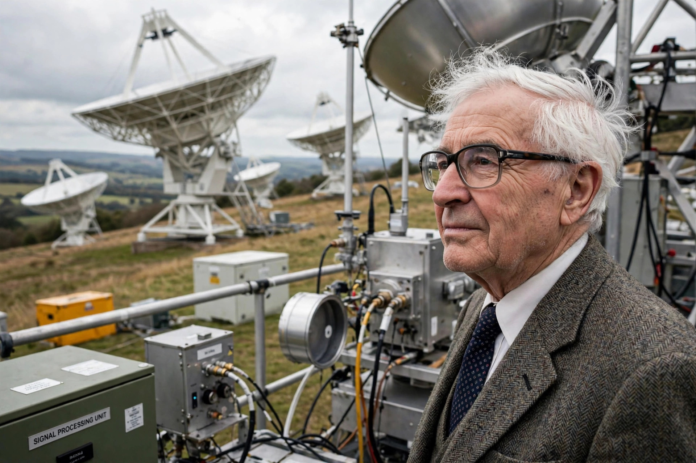

| Born | 11 May 1924 Fowey, Cornwall, England |
|---|---|
| Died | 13 September 2021 (aged 97) |
| Alma mater | University of Cambridge |
| Known for | Discovery of pulsars |
| Awards | Nobel Prize in Physics (1974) |
| Fields | Radio astronomy |
| Institutions | University of Cambridge |
Antony Hewish (11 May 1924 – 13 September 2021) was a British radio astronomer who won the Nobel Prize for Physics in 1974 (jointly with Martin Ryle) for his work on the development of radio aperture synthesis and its use in the discovery of pulsars. Graduate student Jocelyn Bell Burnell made the initial observation of the first pulsar under his supervision, and her exclusion from the prize became a famous controversy.
Hewish studied at Gonville and Caius College, Cambridge; his studies were interrupted by wartime work on airborne radar countermeasures, where he met Martin Ryle. He joined Ryle's radio astronomy group at the Cavendish Laboratory after completing his degree.
In the 1960s Hewish designed the Interplanetary Scintillation Array, a large radio telescope at the Mullard Radio Astronomy Observatory intended to study quasars through the twinkling of their radio emission in the solar wind. In 1967 his research student Jocelyn Bell noticed a regular "bit of scruff" on the chart recordings — pulses repeating every 1.337 seconds. The source, initially dubbed LGM-1 ("Little Green Men"), was identified as a rapidly rotating neutron star: the first pulsar. The discovery paper appeared in Nature in February 1968 with Hewish as first author.
The 1974 Nobel citation recognised Hewish's "decisive role in the discovery of pulsars". Many commentators, including the astronomer Fred Hoyle, publicly argued that Bell Burnell deserved a share; she herself was gracious about the decision. Hewish also received the Eddington Medal and the Hughes Medal during his career.